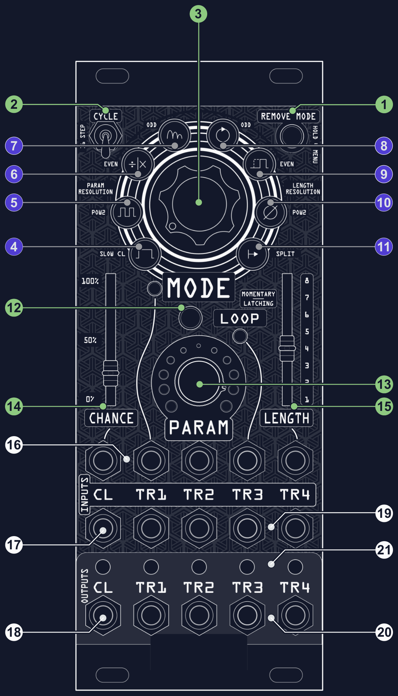
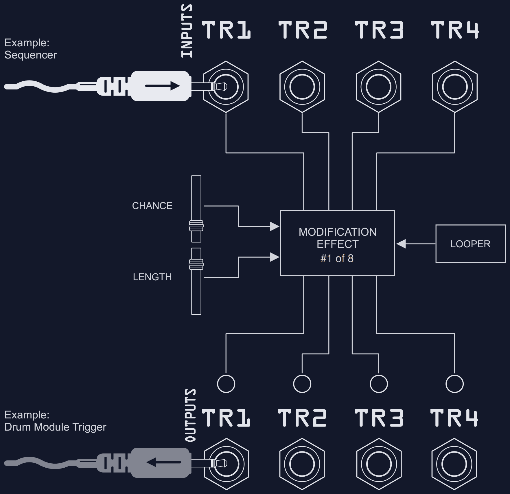
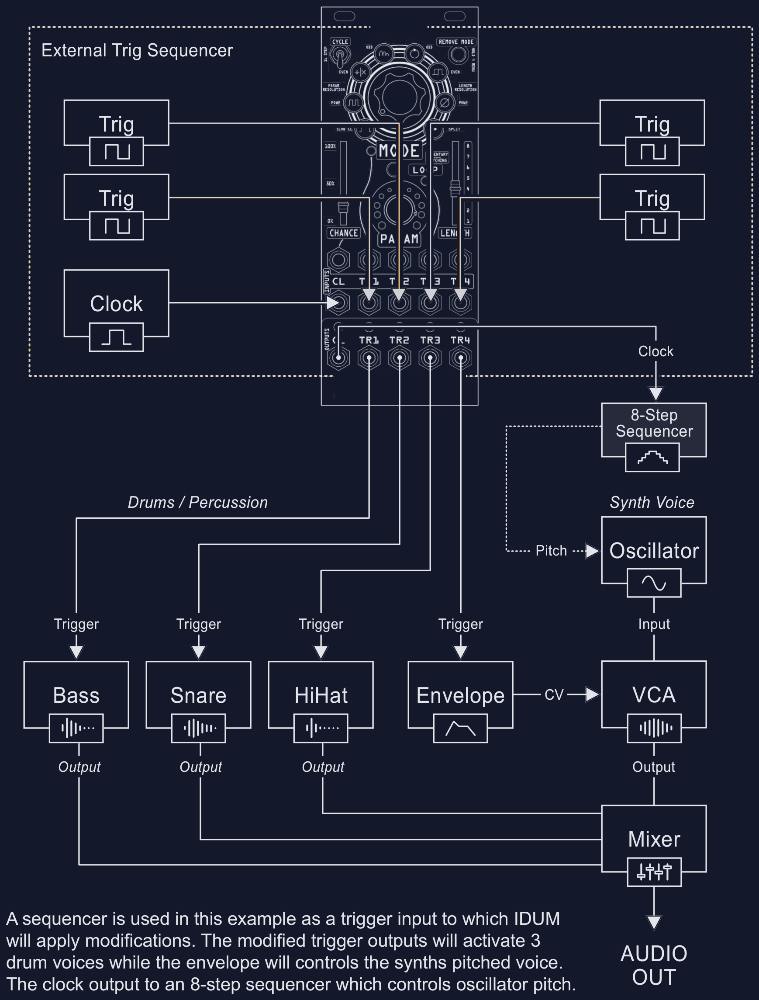
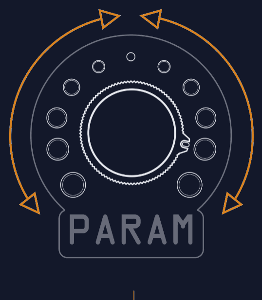

Free custom firmware for the Mystic Circuits IDUM. Everything IDUM does, plus bug fixes, new modes and options, and a few opinionated changes to how some modes behave.
Version 1.0.0 - July 17, 2026
Based on Eli Pechman's IDUM firmware v.99 (Mystic Circuits), licensed CC BY-SA 4.0. ID00M modifications by 00 Modular, released under the same license. IDUM and the IDUM name are by Mystic Circuits; ID00M is an independent community modification and is not affiliated with or endorsed by Mystic Circuits.
ID00M is a free, open-source custom firmware for the Mystic Circuits IDUM, based on Eli Pechman's v.99. It keeps everything IDUM already does and adds bug fixes, new modes and options, and a few opinionated changes to how some modes behave.
Normally, making complex electronic music with the modular requires either meticulous sequencing done in advance or a large ecosystem of modules. IDUM makes this easier: instead of generating musical patterns on its own, it acts like an effects processor for the sequences that run through it. Just as a filter or delay lets you alter a sound by twisting knobs, IDUM manipulates the actual gates and sequences of connected modules, but with a level of playability not normally accessible to a sequencer. It can do anything from slightly varying carefully crafted sequences to turning your music into an onslaught of controlled chaos.
At power-on, ID00M lights the first and last ring LEDs together (a "00" signature) for about a second, so you can tell at a glance the module is running ID00M and not stock. Stock v.99 lights a single third LED instead.
This manual follows the structure of the original IDUM manual. Sections marked ID00M describe behavior that is new or changed from stock IDUM. Flashing is always reversible: the firmware updater can put Eli's stock v.99 back on the module at any time.
Already know IDUM? Start here. ID00M keeps everything IDUM does, so this section is the fast path to everything it changes and adds. The rest of the manual then covers the module from the ground up.
These restore behavior IDUM was meant to have; nothing here changes its character.
The headline feature. Each of the four channels can run its bursts and bouncing balls at its own rate: ÷4 ÷3 ÷2 ×1 ×2 ×3 ×4 ×8. So every drum voice can ratchet or bounce at a different speed against the same clock, for the long-requested "ch1 x1, ch2 x2, ch3 x4, ch4 x8" idea. It is set in a dedicated editor reached from page 2 of the setup menu by flipping the CYCLE switch up; see the Page 3 per-channel clock editor for the controls. (MULTIPLY / DIVIDE is excluded, since it already tracks each channel's own input rhythm.)
An optional one-voice-at-a-time output filter: when two channels would fire at the same instant, only the highest-priority one passes. Priority is editable per channel. Turns dense chaos into a tight, hocketed groove. Set it in Page 2 options.
Every stock IDUM mode replaces your incoming triggers with its own output, which is much of why IDUM can feel destructive. MERGE lets a mode instead ADD to the input (keep your hits, layer the mode on top) or CUT it (keep your hits, but subtract or re-gate them where the mode fires). It is set in Page 2 options at ring slot 6; LED 6 solid means MERGE is active and the loop LED blinks the state (1 = ADD, 2 = CUT, 3 = MIX).
MERGE only touches the four movement / pattern modes - ROTATE, DELAY, BREAK, SCATTER. The trigger-anchored modes (HOLD, BURST, MULTIPLY / DIVIDE, BOUNCING BALL) always replace: they are already built around your incoming triggers, so ADD would just double the input and CUT would fight the mode instead of shaping it. MERGE also only acts on a channel while that channel is actively running a modification.
OFF - stock behavior. Every mode replaces, exactly as on Eli's IDUM.
ADD - keep your hits, layer the mode on top. The mode's output is summed with your raw input, so nothing you play is lost and the mode piles on around it. This is the constructive MERGE, and it works the same way on all four eligible modes: ADD on ROTATE layers the scrambled voice over your original part, ADD on BREAK plays the preset rhythm alongside your hits, and ADD on SCATTER sounds the off-grid copy next to your on-grid hit. The standout is ADD on DELAY, which turns DELAY from a shift into a true dry-plus-delayed echo (your hit and its later copy, rather than just the moved copy).
CUT - keep your hits, but gate them by the mode. Where ADD sums, CUT subtracts, and it does so in two different ways depending on the mode. CUT only affects ROTATE and BREAK; DELAY and SCATTER have no musical "subtract," so they stay on plain replace in this state.
MIX - both at once, by mode. DELAY and SCATTER ADD while ROTATE and BREAK CUT, so a single setting gives you layered echoes and scatter alongside hocketed rotate and stenciled break. It is the "best of both" state when you are running different modes across channels in split mode.
MERGE currently affects live playing, not loop playback.
Credit: the MERGE concept and its ADD / CUT naming come from "Glitch, Please!" by Patrik Andersson (MorphWorx), a VCV Rack and 4ms MetaModule port of IDUM. ID00M's version is an independent implementation and behaves differently, so treat it as inspired by his work rather than a match to it. If you patch in VCV Rack, go check out MorphWorx.
A second bank of 16 break patterns, mostly grooves based on clave and world rhythms (son, rumba, bossa, tresillo, cinquillo, cascara, bembe, songo, baiao, samba) plus a few true polyrhythms (3:2, 4:3, 5:4, hemiola), alongside the original drum patterns. A break speed multiplier runs the patterns at 1x / 2x / 3x / 4x. See 7 - BREAK mode.
Click the split menu slot (see Page 1 options) once for split, twice for split + freeze (shown by a blinking loop LED). A third click turns off split mode. With freeze on, the PARAM knob is snapshotted the instant each channel starts a modification and held for its duration, so in split mode each channel can hold its own PARAM (and mode) by moving the knob as they trigger, instead of all four tracking the live knob. It tends to settle the output, a handy way to tame the chaos. This was a hidden, source-only option in stock IDUM.
Hold REMOVE MODE while powering on to wipe back to defaults. Keep the button held and the module confirms the reset: the loop LED lights and the ring LEDs run a short sweeping animation for as long as you hold it. Release REMOVE MODE and it plays the normal power-on "00" signature (the first and last ring LEDs lit together for about a second), now running factory defaults. A normal power-up never shows the sweeping animation, so that is your confirmation the reset took.
A few modes play differently than stock IDUM (full detail in the Modes section):
Follow the installation instructions carefully to avoid module or rack damage.
Ensure the following conditions are correct for trouble-free installation:
The ribbon cable's red stripe goes to the -12V pin at both ends: on the module header (look for the -12V mark or the white PCB tag) and on the rack power bus board. Reversing it can damage the module.
The panel at a glance. The numbered callouts match the table below, and each callout is coloured by type: see the legend.

| # | Control | Function |
|---|---|---|
| 1 | REMOVE MODE button | Clears the current mode, and ends an active modification early. Long-press to enter the setup menu. In ID00M, hold it while powering on for a factory reset. |
| 2 | CYCLE switch | Keeps a sequencer plugged into the clock output locked to its original position. In ID00M, flipping it while in the page-2 menu opens the per-channel clock editor. |
| 3 | MODE knob | Selects the modification effect, one of 8. The lit ring LED shows the active mode. Also controllable by CV. |
| 4 | HOLD mode | Alters the length of incoming triggers. |
| 5 | BURST mode | Burst generator activated by incoming triggers. |
| 6 | MULTIPLY / DIVIDE mode | Multiplies or divides the speed of incoming triggers. |
| 7 | BOUNCING BALL mode | Bouncing-ball effect activated by incoming triggers. |
| 8 | ROTATE mode | Scrambles the trigger input-to-output connections. |
| 9 | GATE DELAY mode | Delays incoming triggers by a variable amount. |
| 10 | BREAK mode | Preset rhythms shaped by incoming triggers. |
| 11 | SCATTER mode | Nudges triggers off-grid to a quantized sub-slot of their own gap. In ID00M this replaces the stock SKIP mode in this slot. |
| 12 | LOOP button | Loops the most recent 8 steps of activity. Also controllable by an external trigger. |
| 13 | PARAM knob | Parameter for the active mode; its behavior varies by mode. Also controllable by CV. |
| 14 | CHANCE slider | Probability of a modification occurring, 0 to 100%. Also controllable by CV. |
| 15 | LENGTH slider | Length of the modification, 1 to 8. Also controllable by CV. |
| 16 | CV / trigger inputs | Assignable modulation over chance, mode, param and length, plus a loop trigger. |
| 17 | Clock input | External clock in. |
| 18 | Clock output | Modified clock out. |
| 19 | Trigger inputs | Typically from an external sequencer, LFO or gates. CL is leftmost, then TR1 to TR4. |
| 20 | Trigger outputs | Pass triggers through unmodified, or processed by the selected mode. |
| 21 | Input / output LEDs | One per channel: blue for an input, red for a modified output, and pink for an unmodified output. |
IDUM has 2 rotary controls, 2 selection buttons, 2 slider controls, and a selection switch. These are used to control the available features and effects.
Press / tap to select an option, or long-press to change function. The upper-left button is the REMOVE MODE control (clear mode / enter setup), and the central button controls the LOOP function on/off.
Adjust up or down to make a selection across a range. The left slider is the CHANCE setting (probability 0-100%); the right slider is LENGTH (1-8) for the selected modification.
Turn clockwise / counter-clockwise to set the active effect from one of the 8 available modifications. The selected mode's LED illuminates brightly and can be edited by the sliders and PARAM. In loop mode this also selects the start step and manually scrubs the loop.
The PARAM control depends on the current mode and selects one of the available parameters for the active modification. Available settings vary by mode.
Maintains the original sequence position of an external sequencer connected to the clock output after applying effects to the clock.
ID00M also uses a flip of the CYCLE switch (while you are in the page-2 menu) to reach the new Page 3 per-channel clock editor. See New in ID00M.
The TR LEDs illuminate to indicate activity on the trigger input (lit blue) and the modified trigger outputs (lit red). Any unmodified output shows a pink LED.
CV inputs can be applied to IDUM for external control and modulation over the chance, mode, parameter, and length functions. In addition, an external trigger can control the loop on/off. One CL (clock) and four TR (trigger) inputs are featured along with their modified output counterparts.
| Input | Format | Range | Description |
|---|---|---|---|
| Chance | +/- CV input | 0-5 | External control over probability 0-100% |
| Mode | +/- CV input | 0-5 | External control for mode selection |
| Param | +/- CV input | 0-5 | External control over parameter setting |
| Loop | Trigger input | 0-5 | External control for loop on/off |
| Length | +/- CV input | 0-5 | External control over length 1-8 |
| Input | Format | Range | Description |
|---|---|---|---|
| CL | Clock input | 0-5 | External clock in |
| TR1-TR4 | Trigger input | 0-5 | External sequence trigger in |
| Output | Format | Range | Description |
|---|---|---|---|
| CL | Clock output | 0-5 | Modified clock output to external device |
| TR1-TR4 | Trigger output | 0-5 | Modified output to external device |
Trigger inputs activate at approximately 1.8V. CV inputs accept positive and negative voltages.
IDUM has 4 trigger inputs which can be connected to an external gate source, typically a gate sequencer or LFO. The IDUM modification and on-board effects are then applied to the gate signals before passing them to the outputs. This applies an effect to modify incoming sequences in a way that is playable with tactile controls, in the same way an audio effect can modify the signal of an audio source.
All triggers connected at the inputs are affected by the currently active modification effect, and this affected signal is delivered to the outputs. Input activity is indicated by the TR1-TR4 channel LEDs illuminated blue; output activity by the channel LEDs illuminated red; an unmodified output LED is pink.

IDUM synchronizes to an external clock in order to activate modifications and produce bursts in time with the sequence. It also has modes that manipulate the incoming clock in order to change the speed and order of steps of whatever sequencer you have connected to IDUM's clock output. The normal function will typically cause your external sequencer to drift out of sync with the original sequence. But when the CYCLE switch is in its upright position, IDUM sends out a burst of clocks at the end of every modification to catch up to its original sequencer position. This works better with some sequencers than others; complex digital sequencers usually work less well with IDUM's clock manipulation than a more fundamental analog sequencer.
| CYCLE | Behavior |
|---|---|
| Up | Maintains the original sequence position of sequencers connected to the clock output. |
| Down | Allows the connected sequencer to drift in position depending on each activated modification. |
To help speed up the learning curve with IDUM, a recommended first patch is shown. This is a good starting point and demonstrates the features described in this manual. Other patches and configurations can also be used.
A sequencer is used here as a trigger input to which IDUM applies modifications. The modified trigger outputs activate three drum voices while an envelope controls the synth's pitched voice. The clock output drives an 8-step sequencer that controls oscillator pitch.

To learn about each mode effect on IDUM, it is good to start with the first patch and try out each mode by following along with this manual. All you really need is a clock at the clock input and some sounds to plug the trigger outputs into. To start out: set the CHANCE slider all the way up, the LENGTH slider all the way down, and the PARAM knob at 12 o'clock. From here the MODE dial selects which effect is engaged.
Turn the large MODE rotary to select the modification mode. The LED for the selected mode is bright, LEDs for available modes are dim, and removed modes are unlit. When a modification is active, only the selected mode's LED is illuminated. Modes are locked in once a modification activates and only change at the end of each modification.
You can remove the current mode from the pool of available modifications by quickly pressing the REMOVE MODE button on the selected mode. This is also a way to prematurely end any active modification. Removed modes have an unlit LED, and can be reinstated by quickly pressing REMOVE MODE on that mode again. Note that incoming mode CV can affect the selected mode, so the dial may not point to the actual selected mode; to avoid this, remove modulation before adding or removing modes.
On stock IDUM, powering on with modes removed could strand the module on a removed mode (booting stuck on "hold" until you nudged the knob). ID00M fixes this: sweeping the MODE knob only ever lands on active modes.
Adjust the PARAM knob to alter the behavior of the active modification. PARAM behaves differently depending on which mode is active; each mode's PARAM behavior is described in the Modes section.
Adjust the LENGTH slider to define how long each modification stays active. Every time a modification activates, LENGTH locks it in for a set number of clock cycles. In all modes except SCATTER (clock) the clock output is paused during a modification, causing an external sequencer to hold position; the clock only advances on the first step of the modification.
Adjust the CHANCE slider to set the probability of a modification occurring. The choice to activate happens whenever a clock is received. At 0% (bottom) no modifications occur; at 100% (top) modifications always apply; in between, a modification activates by chance based on the stated percentage.
Stock IDUM never seeded its random number generator, so it replayed the identical "random" sequence of modifications on every power-up. ID00M seeds from hardware entropy at boot, so the module genuinely varies each time.
IDUM can loop the most recent eight steps of activity. Engage the looper with the LOOP button (lit = on) or by sending a gate into the loop gate input. This captures the last 8 steps of gate inputs along with their modifications and settings, then replays them in a loop; IDUM's controls then govern loop playback. See Looper.
IDUM has 8 modification modes on the MODE ring. Each mode's PARAM knob usually has a distinct behavior on its left half (counter-clockwise from noon) and right half (clockwise from noon). The sections below port the original IDUM behavior, with ID00M changes called out.
HOLD mode modifies the length of incoming triggers. With PARAM at noon, triggers pass through unaltered. Turned clockwise from noon, incoming triggers are lengthened gradually until they are held for the length of the modification. Turned counter-clockwise from noon, incoming triggers are probabilistically skipped, with the likelihood of a skip increasing as the knob turns further counter-clockwise, until completely muted.

Sets the probability of incoming gates being skipped. The decision is made independently for each channel when it receives a gate, but the probability is shared across channels. At noon, 0%; fully counter-clockwise, 100%; in between shifts gradually.
Increases the length of incoming triggers by a percentage of the modification length. It only lengthens gates (never shortens them). At noon, triggers pass at their incoming length; fully clockwise, gate ends are extended by the full modification length.
BURST mode activates a trigger burst / ratchet whose speed is a multiple of the incoming clock speed whenever a trigger is received at one of the four trigger inputs. A burst activates the first time a trigger is received at each channel's input and continues for the rest of the modification. The speed is a multiple or division of the most recent clock interval, set by PARAM. Bursts reset whenever a trigger is received, so triggers that are not on quantized clock steps can offset the burst from the clock grid.
Stock: burst-speed division (clock divided by the parameter).
ID00M replaces the CCW half with probabilistic thinning: it randomly drops incoming triggers rather than producing a slow clock-divide echo.
Sets the burst-speed multiplication: the output is the clock input multiplied by the parameter value. At high clock speeds it is possible to ask for triggers too fast to produce; in that case the outputs are silent.
Bursts stay crisp at high multiplication: the trigger pulse width now scales with the subdivision, so fast ratchets smear together less.
MULTIPLY / DIVIDE offers a second flavor of trigger burst whose speed is determined by the time between incoming triggers instead of the clock. Each channel's burst speed changes dynamically as new triggers arrive and can differ from other channels, while sharing the same multiplication / division parameter. The burst start resets whenever a new gate arrives, so the effect can be subtle with a large division parameter.
Stock: divide the most recent trigger interval (an interval-stretch that was nearly inaudible on a steady beat).
ID00M makes the CCW half a true trigger divider: it passes 1 of every N triggers.
Creates bursts whose timing is a multiplication of the most recent trigger interval. At noon the output repeats the most recent interval; fully clockwise, the speed is multiplied by up to 8. As with BURST, very fast requested triggers may come out silent.
BOUNCING BALL is another flavor of burst that is unquantized from the clock and either increases or decreases in speed over time, like a ball bouncing off a table and losing energy. On the right side of PARAM, triggers start fast and gradually slow for an "expanding" effect; on the left side, triggers start slow and gradually speed up for a "contracting" effect. In both cases the effect gets faster the further from center you travel, and the burst restarts every time a trigger is received.
The further counter-clockwise, the faster the ball contracts. Overall contraction length is scaled by the LENGTH slider.
The further clockwise, the faster the ball starts at the beginning of the effect. Overall expansion speed is scaled by the LENGTH slider.
In bouncing-ball mode, output 3 no longer inherits a stale timing value from the previous modification.
ROTATE scrambles the connection between the trigger inputs and outputs. Turned clockwise from noon, each output shifts right, wrapping around to the left when shifted past output 4. Turned counter-clockwise from noon, inputs and outputs are swapped in pairs to create new arrangements.
Progressively swaps different pairs of inputs and outputs in a criss-cross pattern.
Rotates outputs to the right, with outputs past output 4 wrapping back around to output 1.
In split mode, ROTATE now honors each channel's own PARAM (channels 2-4 used to all follow channel 1).
GATE DELAY postpones the output of each gate to shift the timing of the outputs and create wonky, off-kilter rhythms. Instead of a static delay, it uses the time between the most recent gates at that channel's input as the reference, so the delay for each channel changes dynamically with what is playing. In ID00M, PARAM is a single monotonic sweep: fully counter-clockwise delays each hit by an eighth of its channel's input gap, rising to a full gap fully clockwise. Every shifted hit snaps to a quantized subdivision of that gap, all four channels share the same grid, and the delay is capped at one gap so a delayed hit never runs into the next.
On stock IDUM, DELAY was a bipolar knob with a hard-wired per-channel fan (divisors 8/12/14/16) that landed hits on mismatched, non-musical fractions. ID00M's version is uniform and quantized (above). It shifts each hit later rather than adding a dry copy; for a dry-plus-delayed echo, use MERGE ADD on this mode.
BREAK plays a preset rhythm that is altered by incoming triggers. PARAM selects one of the rhythms in the bank, left to right. Whenever a trigger is received at a trigger input, the preset rhythm resets on that channel, turning the preset into a sort of "mask" that turns anything coming in into a breakbeat. The rhythms are written with specific drums in mind (TR1 = bass drum, TR2 = snare, TR3 = hi-hat, TR4 = percussion or a melodic synth line), but feel free to patch each channel into whatever you like. Unlike most modes, PARAM has no left/right split here; presets are selected from fully counter-clockwise to fully clockwise.
ID00M adds a second bank of 16 break patterns (clave and world rhythms plus a few true polyrhythms) and a break speed multiplier (1x / 2x / 3x / 4x). See New in ID00M.
ID00M replaces stock IDUM's CLOCK SKIP in this slot (the purple slot, following Eli's convention of putting custom behavior there) with SCATTER. Where CLOCK SKIP manipulated an external sequencer on the clock output, SCATTER works on the triggers: it randomly displaces incoming hits off their spot to a quantized sub-position of that channel's own gap, for a glitchy, IDM feel. No ID00M mode manipulates the clock output.
Each incoming trigger can be thrown forward into the gap that follows it, landing on a quantized subdivision of that gap rather than stacking on top of other hits, so SCATTER cooperates with linear drumming. A hit that does not move passes cleanly on its spot. PARAM is bipolar, and the landing grid is drawn from the Parameter Resolution setting (POW2 = a tight 1/2/4/8; ODD adds triplet and quintuplet subdivisions for an off-kilter feel).
Each hit can be thrown to one quantized sub-slot of its gap. The further counter-clockwise, the wider the reachable spread. Short, medium, and long throws stay possible at every setting; the knob opens the ceiling.
A thrown hit can chain into up to three hits, for stutters and rolls. The further clockwise, the wider the spread and the busier the cascades.
At center, SCATTER passes through. There is no separate amount control: the one knob sets both how far hits travel and, because on-spot hits stay put, how many move, while CHANCE governs how often the whole effect is active.
IDUM's LOOP function records the eight most recent steps of triggers along with whatever modification activity was happening on each step, then replays those eight steps. While the looper is active, IDUM's controls switch their normal functionality to give control over loop playback. Engage the looper manually with the LOOP button under the mode dial, or by sending a gate into the LOOP gate input.
The sequencer connected to the clock output has its position manipulated to reflect what the looper is doing. For example, set the loop length to 4 and the external sequencer runs a length of 4; scrub the looper position with the MODE knob and the sequencer scrubs with it.
The looper now replays faithfully what you recorded: in split mode it no longer fires a modification on steps that recorded none, recorded gates and their modifications are no longer rotated out of alignment, and a looped ratchet uses the same PARAM-to-speed mapping as live playing.
| Control | Function during loop playback |
|---|---|
| LOOP button | Tap to toggle loop on or off. The LOOP label illuminates when looper mode is on. |
| LOOP trigger input | External trigger for controlling loop on / off. |
| MODE knob | Selects the first step of the loop. Also scrubs loop playback when loop length is set to 1. |
| MODE LEDs | Show the current step being played by the looper, within the eight possible steps. |
| PARAM knob | Speed of the loop. |
| CHANCE slider | Probability, on a given step, that the saved modification is re-applied to the looped gate data. Unlike normal operation, here each modification is length 1, so modification activity is decided every step. |
| LENGTH slider | Length of the loop. Set to 1 to repeat playback of the current step. |
| CYCLE switch | Maintains the original sequencer position when exiting the looper. |
| CLOCK output | Manipulates the position of any connected sequencer so its sequence position mimics the loop position. |
Each step is one clock pulse, and the looper stores that pulse's trigger activity at sub-clock resolution, so ratchets and multiple hits within a step are preserved. The behavior of the loop gate input can be switched from toggling the loop on/off to momentarily holding it on while the gate is high; this is set in the setup menu (see below).
IDUM has extra options under the hood, reached through the menu. In this mode the active settings are shown on the MODE ring of LEDs and the LOOP LED. Settings are saved when you exit and persist across power cycles. ID00M keeps the stock page 1 and adds a second page for its new options.
Unplug any modulation from the MODE CV input while in the menu; it moves where the dial appears to point. The option names are also faintly written on the panel.
These are the stock IDUM options, with one ID00M addition on the split slot.
| Ring slot | Option | What it does |
|---|---|---|
| 1 | Slow Clock | Speed of the clock bursts used to re-synchronize a sequencer on the clock output (via CYCLE). LED off = slow, best for slower or digital sequencers; LED on = fast. |
| 2 | Parameter Resolution: POW2 | Restricts the PARAM values used by the ratcheting modes and the SCATTER grid. POW2 = 1/2/4/8; EVEN = 1/2/4/6/8; ODD = any 1-8. The lit LED in this group shows the current choice. |
| 3 | Parameter Resolution: EVEN | |
| 4 | Parameter Resolution: ODD | |
| 5 | Length Resolution: ODD | Restricts the values available to the LENGTH slider, the same way. ODD = any 1-8; EVEN = 1/2/4/6/8; POW2 = 1/2/4/8. |
| 6 | Length Resolution: EVEN | |
| 7 | Length Resolution: POW2 | |
| 8 | Split / Split + Freeze (ID00M) | Short-press to cycle: once = split on, twice = split + PARAM freeze, three times = off. Ring slot 8 solid = split; loop LED blinking = freeze engaged. See New features. |
| LOOP LED | Loop-gate behavior | Press the LOOP button while in the menu to toggle. Off = the loop gate toggles the looper on each rising edge; on = the loop gate holds the looper on only while the gate is high. |
Keep the CYCLE switch down for page 2. Flipping CYCLE up switches to page 3, the per-channel clock editor (below). So if page 2 does not look the way you expect, check that CYCLE is down.
| Ring slot | Option | What it does |
|---|---|---|
| 1 | Linear drumming on / off | Toggle the one-voice-at-a-time output filter. Steady dot = on. |
| 2-5 | Linear-drumming priority | Press a channel's slot to move it to top priority (others shift down); tap channels from lowest to highest priority to build any ranking. Shown as a chasing dot stepping the ranks. Default TR1 > TR2 > TR3 > TR4. |
| 6 | MERGE | Cycle OFF / ADD / CUT / MIX. LED 6 solid = active; the loop LED blinks the state (1 = ADD, 2 = CUT, 3 = MIX). |
| 7 | Break pattern bank | Cycle the break bank: bank 0 = the original drum patterns, bank 1 = the clave / world / polyrhythm bank. LED 7 solid = the non-default bank. |
| 8 | Break speed multiplier | Cycle 1x / 2x / 3x / 4x. LED 8 solid = above 1x; the loop LED blinks the multiplier. |
From page 2, flip the CYCLE switch up to open the per-channel clock editor; flip it back down to return to page 2. (CYCLE does nothing menu-wise on page 1.) This is where you set each channel's clock rate for its bursts and bouncing balls. In short: page 2 = CYCLE down, page 3 = CYCLE up.
MULTIPLY / DIVIDE is deliberately excluded here, since it already ratchets against each channel's own input rhythm rather than the clock.
ID00M is flashed, and reverted, right in your web browser. There is no programmer to buy, no avrdude, and no Arduino IDE to install.
ID00M lights the first and last ring LEDs together (a "00" signature) for about a second at power-on, so you can confirm the flash took. Stock v.99 lights a single third LED instead.
The updater can put Eli's stock v.99 back on the module at any time, so trying ID00M is risk-free. Pick Stock v.99 in the updater to revert.
All ID00M firmware source, the prebuilt images, and the browser flasher are open (CC BY-SA / MIT) and available in the public ID00M repository, linked from the resources page.